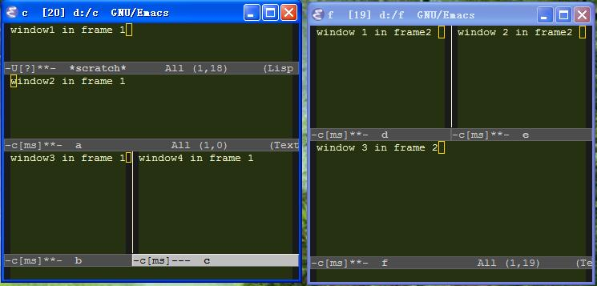

emacs 入门第一课：Emacs里的基本概念
Table of Contents
无聊的开场白
所谓“名不正则言不顺,言不顺则事不成，事不成则礼乐不兴，礼乐不兴则刑罚不中，刑罚不中则 民无所措手足”又所谓“瞽不知黑白者，非以其名也，以其取也。”（瞎子所以不知黑白，不是因为他 说不出黑白这两个名词，而是他不能在实际中选取出黑白的东西来）。概念不清的结果，必然导致‘民 无所措手足’，所以第一课主要介绍一下Emacs 中的一些概念，为Emacs正名。
buffer（缓冲区）
Emacs并不直接对文件进行操作, 它是把文件加载进buffer, 用户直接操作buffer, 只有当用户确 定把buffer中所做的修改写入文件时, Emacs才把buffer中的内容写入文件. buffer实际上就是一 个内存缓冲区, 这和一般编辑器中都一样, 应该很好理解。另外,一个buffer并不一定与某一特定 的文件关联,这种不与文件关联的buffer里的内容，在Emacs退出时，会丢失。Emacs 认为不与文件 关联的buffer里的内容，用户并不关心,所以退出时直接丢弃。buffer 的概念是Emacs 里的精髓， 它使Emacs的操作方式得以统一，也是Emacs为什么能靠键盘完成全部操作的一个原因。Emacs里很 少有弹出窗口，虽然Emacs 也实现了用弹出窗口等来实现一定的操作，比如使用Windows里的对话 框打开文件、保存文件，但除了初学者很少有人会使用它们。因为有弹出窗口必然设及到窗口的管 理，比如移动窗口、调整窗口的大小、焦点的转移等，它会使事情变得复杂。Emacs里进行操作的 时候把一切东西都以文本的方式来处理，比如就以选择文件为例，普通的程序一般用Windows 里的 “打开文件”，然后用鼠标点选特定的文件，而这些文件一般是以List 这样的窗口组件来组织。 在Emacs 一般仅仅把所有的文件名放到一个buffer 里，一行一个，你想选中一个文件，只要把光 标移动到文件所在行回车就可以了。而在buffer里绑定的所有快捷键：移动到下一行、上一行，翻 页等等操作在你“打开文件”时依然可以使用。Emacs也会新建某些buffer 来进行相应的操作， Emacs自已使用的buffer 一般用"*" 引起来，比如用来记录你进行了哪些操作的*Message* buffer ,及进行补全时用的*Completions* buffer ,这样的buffer 不与文件关联，所以你关闭 Emacs时这些buffer里的内容会被丢弃，因为没有保存的必要。
window（窗口）与frame
这两个概念与浏览器里的window ,frame 概念正好颠倒。由于Emacs很早就诞生了（1984年由 Richard Stallman发起）,它诞生的时候，Windows还在娘胎里孕育(孕育了六年才出Windows3.0)。 它的窗口概念和现在基于窗口的操作系统中的窗口概念不是一样的.我们把你可以用Windows下的 Alt+Tab键进行切换的窗口称为‘Windows窗口’，而把Emacs里的window称为‘window’或者 ‘Emacs窗口’ Emacs中的window是用来显示buffer的一个区域，也就是说buffer是抽象的,window是 具体的，你看得见的 它并不像Windows窗口拥有自己的标题栏,系统菜单栏. frame, Emacs中的 frame就是Windows窗口,可以用Alt+Tab键在窗口间切换. 同一个Emacs进程可以用多个frame,(你可 以通过菜单栏里的File~new Frame来创建一个frame)(我一般只用一个frame)注意他们是同一个进 程里的两个Windows窗口，所以他们之间可以共享信息，而一个frame 里可以打开多个window。如 图 显示了两个frame ,每个frame 里分别有4 、3个窗口 （不算最下方只有一行的minibuffer,其实minibuffer也是一个特殊的buffer,它用于接受命令及显 示回显信息。）
Emacs Lisp
Emacs最基础的部分是用c写的，其他部分都是用Emacs Lisp语言写的（Emacs Lisp占大约2/3），也就是说 ,Emacs 用c语言写了一个lisp 语言的解释器，而 emacs普通的操作大部分由elisp 语言实现，从本质上讲，你自已的配置文件中的 内容与Emacs 程序自带的elisp脚本没什么区别，都是由c语言实现的部分拿来解释 执行的。这就是为什么Emacs 的扩展性很强、定制性很强的原因。普通的程序的定 制都是通过在菜单里点点选选来实现，而Emacs却是用一种编程语言Emacs Lisp(elisp)。只要这门编程语言能做，你就能让你的Emacs实现特定的功能,有人 戏称Emacs实际是做了一个lisp 解释器，而它的编辑器功能只是凑巧实现的。所以 说九个人的Emacs,会有十种不同的配置版本。Emacs Lisp语言是基于lisp语言的. lisp是LISt Processor的缩写, 即链表处理语言, 所以lisp语言的操作都是基于链 表的, 它的语法也是链表结构, 链表第一个元素表示函数名, 其他元素是参数, 比 如通常语言中的a+b, 在lisp就是(+ a b).而
a=((c+d) * e)
对应的lisp 就是:
(setq a (* (+ c d) e))
lisp 的语法初看上去很吓人，但是想一想小学学的加减乘除优先级里的括号 或许你会有一点他乡遇故知的感觉。
Emacs的mode
建立一个微小的基本功能的集合，然后把所有复杂功能作为这些基本功能的组合。这体现了一种程序设 计的哲学。不同于 Windows, 也不同于 UNIX，它更好的协调了程序的灵活性和同一性。这句话说的应 该是Emacs时的mode 的概念，Emacs里的mode 分major mode ,minor mode两种。 major-mode 是专门用 来做某一特定的事情的。打开的某一个特定文件（Emacs称为buffer)不能同时启用多个major mode。比 如专门为c ,java 语言编写用的c-mode ,java-mode。你不能让一个文件同时处于java-mode 和 c-mode. 而minor mode 则可以在一个buffer 同时启用多个minor mode 如在mode-line 上显示行号的 Line-Number mode 列号的Column-Number , 高亮显示匹配的括号的Show-Paren mode ,mode-line 上显 示时间的 Display-Time ,对关键字进行语法着色的Font-Lock。你觉得进行java 编辑时它的某个功能 用着不爽，或者你想给它添加一点小功能，你可以把它写成一个minor-mode ,minor-mode 可以在特定 的major-mode里启用，也就是说在其他的major mode里不启用。这样可以节省不必要的开支。
函数function、命令command、键绑定keybinding
函数不用多解释，命令是一种特殊的函数，在这种函数内部通常第一个调用的函数是 (interactive) ，表示这是一个可交互的函数，即命令，命令可以与按键进行绑定也可以直接输入 命令名调用这个命令，而普通的函数不能。keybinding 就是将一个命令与某个快捷键进行关联，在 Windows 里普通程序的键绑定一般是Ctrl+c ,或者Ctrl+Alt+c 这种同时按下两个键或者三个键。这 种按键Emacs当然也可以，Emacs还有一种Windows普通程序不具有的按键方式:key sequence,键序 列，即你按顺序按下一连串的快捷键而只执行一个命令。首先说一下Ctrl Alt Shift 等按键在 Emacs里怎么表示，C表示Ctrl ,如C-a 表示Ctrl+a,M 表示Alt ,S表示Shift .而键序列形如:"C-x C-c",表示先按下Ctrl-x ,再按下Ctrl+c,注意在这个过程中你可以一直按着Ctrl不放，所以"C-x C-c"虽然是四个字母，其实你只需要按三个键，且不用同时按。“C-x C-c” 是退出emacs的意思。 "C-x"称为前缀，因为你只按下C-x它并不执行任何操作。Emacs的快捷键是通过keymap来控制的. 也 就是记录keysequence分别绑定了什么命令的一张表，在你按下一些键的时候，Emacs会通过这张表 查看你的操作对应哪个命令，然后执行这个操作就可以了。keymap有全局和局部之分. 每个mode都 会有一个自己的局部的keymap, 局部的keymap会覆盖全局的keymap, 另外如果对应的major mode有 开启的minor mode, 而且这个minor mode有keymap的话, 这个minor mode的keymap会覆盖major mode的keymap. 另外在Emacs中的每个操作都对应一个命令，包括你用鼠标点击菜单，以及输入一个 简单的字母。“正名”的好处不言而喻，你可以通过名字呼唤它，可以将一系列名字连贯起来从而 执行一系列的操作。比如默认情况下C-k,是删除从光标到行末的所有内容，我偏偏不喜欢，我C-k偏要 删除整行内容 ，而假如此时光标在行首的话C-k的功能就是删除整行内容了，而C-a 是跳到行首 于是实现删除整行这个功能的实现可以通过C-a C-k这种方式来实现， 于是有了下面这个命令
(defun my-kill-whole-line() (interactive) ;;这个是命令必须要调用一个函数，表示我是一个命令，而不仅仅是普通的函数 (beginning-of-line) ;; 跳到行首，，默认C-a 绑定的函数 (kill-line) ;;这个是删除光标到行末之间内容的函数，默认绑定为C-k ) (global-set-key (kbd "C-k") 'my-kill-whole-line) ;;这个将my-kill-whole-line重新绑定到C-k 上
把它保存到配置文件.emacs 中，C-k 就是删除整行内容了。
kill delete kill-save yank king-ring
kill等同于剪切，delete 就是删除的意思，kill 与delete 的不同是 kill 掉的内容会放到 kill-ring（剪切环）里，你可以重新取回你kill的内容,而delete掉的内容则直接丢弃无法取回。 kill-save 或者kill-and-save 则等同于复制 ,先把它kill掉然后把它save回来，yank 等同于粘 贴,kill-ring 是名词kill掉的东西会放到这里面，kill-ring 与系统剪切版的不同是剪切版只能 存放一份kill掉的内容，而emacs可以存多份,ring ，环嘛，当然不只一个。 注意kill delete kill-save 并不是具体的命令，kill-word,kill-region,kill-line ,kill-ring-save,kill-region delete-char delete-region 才是具体的命令或函数 默认的等同于cut copy paste 的相应操作是
- C-w ,kill-regin cut
- M-w ,kill-ring-save copy
- C-y, yank paste
- M-y yank-pop 从kill-ring 里取出以前的内容，按时间顺序，（前提是你按下一次C-y）